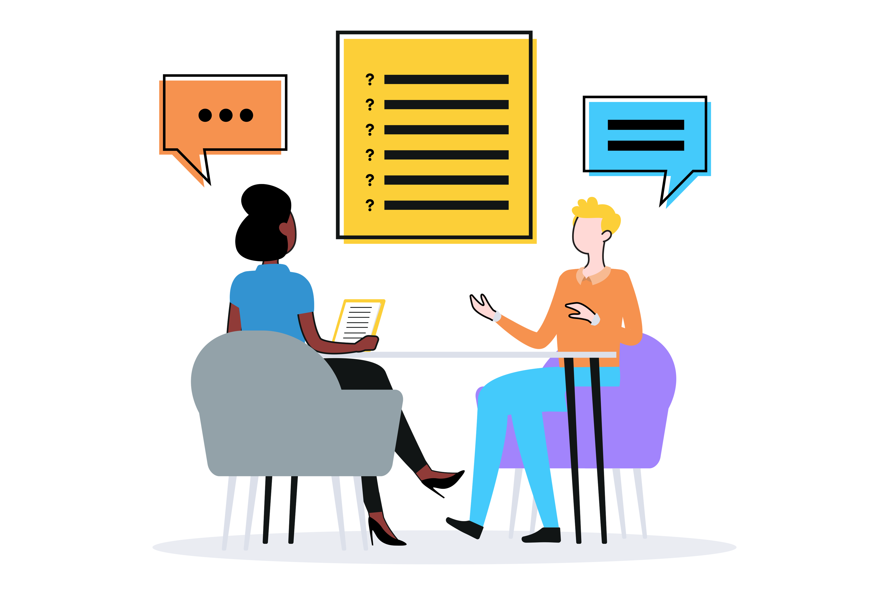

Web Terminology Interview Questions
Web Terminology Interview Questions
1. What is the difference between HTML, CSS, and JavaScript?
- This question assesses the candidate's understanding of the three core technologies used to create web pages.
2. Can you explain what the DOM (Document Object Model) is?
- This question explores the candidate’s knowledge of how HTML elements are represented and manipulated in a browser.
3. What is responsive design, and why is it important?
- This checks the understanding of building web applications that work well on all devices, including desktops, tablets, and
smartphones.
4. What is the purpose of version control systems like Git?
- Aimed at understanding the importance of managing and tracking changes in code during the development process.
5. What is a REST API, and how is it used in web development?
- This question evaluates knowledge of REST (Representational State Transfer) and its use in communication between client and server.
6. Explain the difference between client-side and server-side scripting.
- This tests the understanding of where code executes and the impact on performance and user experience.
7. What are HTTP methods, and what are their purposes?
- Asking about methods like GET, POST, PUT, and DELETE to assess knowledge of how data is sent and received over the web.
8. Can you describe what a Single Page Application (SPA) is?
- This question checks familiarity with SPAs, which provide a fluid, app-like experience by dynamically updating the page without
a full reload.
9. What are cookies, and what are they used for?
- Evaluates understanding of how cookies store data about users and sessions on the client side.
10. What is CORS (Cross-Origin Resource Sharing), and why is it important?
- This question focuses on understanding security protocols that allow or block requests between different domains.
11. Explain what SEO (Search Engine Optimization) is and its importance in web development.
- This question checks the knowledge of techniques used to improve a website’s visibility on search engines.
12. What is minification, and why is it important in web development?
- Tests the understanding of reducing the size of code files (JavaScript, CSS) to improve website performance.
13. Can you explain the concept of AJAX?
- Asking about Asynchronous JavaScript and XML to see if the candidate knows how it allows web pages to update asynchronously by exchanging data with a server in the background.
14. What is the difference between a GET and POST request?
- This question assesses knowledge of different HTTP methods and when each should be used.
15. What are WebSockets, and how do they differ from HTTP?
- This question checks the understanding of WebSockets, which provide full-duplex communication between client and server.
16. What is CDN (Content Delivery Network), and why would you use one?
- Evaluates the knowledge of CDNs, which help reduce latency by distributing content across multiple servers worldwide.
17. What is the purpose of HTTPS, and how does it differ from HTTP?
- This assesses understanding of secure communication on the web, emphasizing the importance of encryption and data integrity.
18. Can you explain the difference between synchronous and asynchronous code?
- Tests understanding of how code execution is handled, especially in JavaScript, and how it impacts performance.
19. What is a web framework, and why would you use one?
- This question checks the knowledge of frameworks (like React, Angular, Django) that simplify web development.
20. Explain what versioning is in an API context.
- This question looks at the importance of managing different versions of an API to maintain backward compatibility.
21. What is cross-site scripting (XSS), and how can it be prevented?
- Assesses understanding of security vulnerabilities and how to protect web applications from them.
22. What is MVC architecture?
- Asking about the Model-View-Controller pattern to see if the candidate understands how it separates concerns in application design.
23. Can you explain what DNS (Domain Name System) is?
- Tests knowledge of how DNS translates domain names into IP addresses that browsers use to load websites.
24. What is the difference between static and dynamic web pages?
- This question differentiates between pages that are the same every time and those that are generated on the fly.
25. What are webhooks, and how do they work?
- Evaluates understanding of server-side callbacks that notify external services when an event occurs.
26. What is the purpose of a load balancer?
- Checks knowledge of how load balancers distribute incoming network traffic across multiple servers to ensure reliability.
27. Explain the concept of caching and its importance.
- This question focuses on understanding how caching improves performance by storing copies of frequently accessed data.
28. What is SSR (Server-Side Rendering), and how does it compare to CSR (Client-Side Rendering)?
- Tests knowledge of the differences between rendering on the server versus the client and the implications for performance and SEO.
29. What is GraphQL, and how does it differ from REST?
- This question assesses understanding of GraphQL as a more flexible alternative to REST APIs.
30. Explain what microservices are in web development.
- Evaluates knowledge of architectural styles that break applications into smaller, independent services.